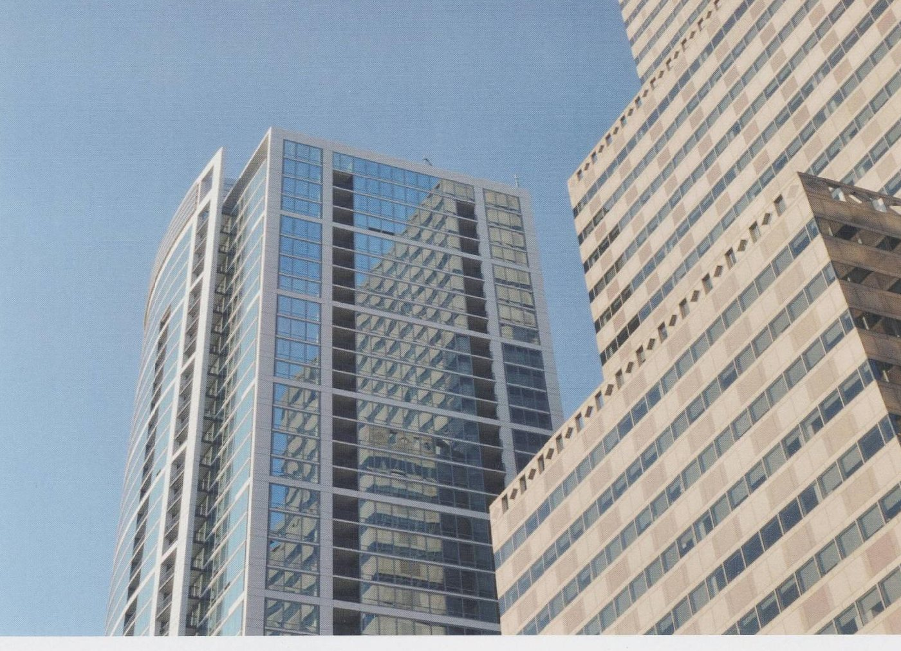

「屋頂要做防水，用什麼材料？」這是我們最常被問的問題，也是最難一句話回答的問題。因為屋頂防水的成敗，材料只佔一部分，剩下的是基材狀況、排水設計與施工條件。同樣一款防水材，用在乾燥平整的新建屋頂跟用在積水的老屋頂，結果會完全不同。

先確認四件事，再談材料
在選材料之前，請先確認以下四件事。這四個答案會直接決定可用的材料範圍，也會決定報價。
如果這四項都還不確定，任何人給你的材料建議都只是猜測。
- 基材是什麼、狀況如何。是 RC 屋頂、既有 PU 防水層、瀝青油毛氈、還是鐵皮浪板？既有塗層是否已經粉化、起泡、剝離？基材決定了底漆的選擇，也決定要不要打除。
- 排水好不好。屋頂是否有洩水坡度？下雨後多久會排乾？如果會積水超過數小時，多數丙烯酸類水性防水材都不適合長期泡水，應改用耐水性更好的系統。
- 上不上人。只有維修時才上去，跟平常會走動、放設備、當曬衣場，需要的耐磨等級完全不同。上人屋頂通常需要加做保護層或選用高機械強度的 PU 系統。
- 工期與天氣。水性材料需要乾燥時間，塗裝間隔通常 8–24 小時。如果只有連續三天的晴天空窗，就不該選需要五道工序的系統。
平屋頂（RC）：最常見的情境
台灣的透天與公寓多半是 RC 平屋頂，這也是防水工程最大宗的部位。
如果是素地良好、排水正常的新建或整理過的屋頂，標準做法是三層：先用水性底漆封閉素地並強化接著，再以複合式防水材做主防水層（通常兩道，總塗佈量 1.0–1.6 kg/m²），最後上面漆保護。面漆這一層常被省略，但它負責抵擋紫外線 —— 少了它，主防水層的壽命會明顯縮短。
如果屋頂有裂縫或既有滲漏，順序要反過來：先處理漏水。裂縫用止水材料填補，滲漏面用滲透結晶型材料處理，讓它與混凝土反應生成結晶填塞毛孔。這類材料的好處是潮濕面也能施作，不必等到完全乾燥。等基層穩定後，再做上述三層。
如果屋頂會積水或需要較厚的膜厚，可以考慮厚塗型彈性水泥，單次施作可達 3 mm；或改用油性 PU 系統，塗佈量約 2.6–3.9 kg/m²，耐水性與機械強度都更好。
鐵皮屋頂與浪板：問題不在防水，在隔熱與鏽蝕
鐵皮屋頂的漏水，八成發生在螺絲孔、搭接縫與鏽蝕破孔，而不是板面本身。所以處理順序是：先除鏽、補接縫，再談塗層。
板面部分，隔熱通常比防水更重要。反射率 65% 以上的隔熱面漆可以明顯降低室內溫度，同時兼具防水與防霉功能，塗佈量約 0.8 kg/m²（二道）。如果屋頂結構有較大的伸縮位移，接縫處建議先用不垂流填縫材處理，再整面塗裝。
常見的三個選材錯誤
- 只買主材，省略底漆與面漆。這是最常見也最貴的省法。底漆決定附著力，面漆決定壽命，省下的材料費通常在三到五年後以重做的形式付出。
- 不同品牌的材料混用。底漆與主材若來自不同體系，可能因為樹脂不相容而起泡、剝離。同一套系統的材料是搭配設計過的。
- 用塗佈量換成本。把 1.2 kg/m² 的建議用量刷成 0.6，膜厚不足，伸長率與耐候性都達不到標示值。材料省一半，壽命可能只剩三分之一。
不確定的話，把現場條件告訴我們
以上是通則，實際工程還是要看現場。如果你手上有圖說、現場照片，或只是知道大概的面積與部位，都可以直接告訴我們，我們會回覆完整的材料配套建議與用量估算。